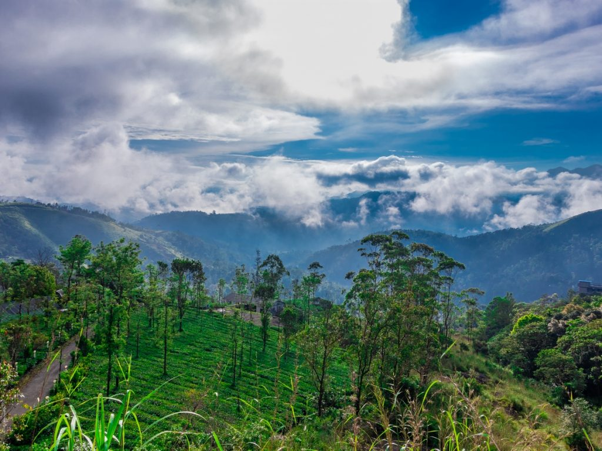
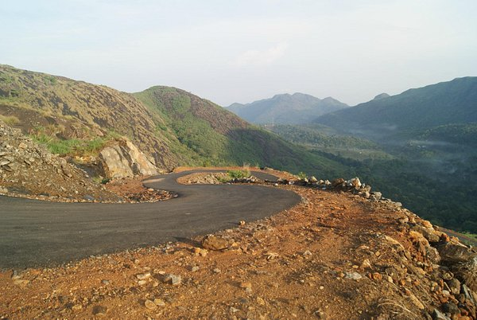

Vagamon Tourism
Vagamon, is a quiet offbeat hill station in Kerala. With a pleasant climate throughout the year, this breathtaking tourist spot has meandering rivulets and lush green hills surrounding it. The tea garden, pine forests, waterfalls, mesmerising meadows are all that makes Vagamon the perfect getaway. Vagamon is gradually gaining attention for being one of India’s topmost adventure tourism spot, with activities such as trekking, rock climbing and paragliding being offered to tourists. Cycling through the mountains is another interesting activity that visitors can participate in to get a better feel of the place.
Kumarakom Tourism
Kerala's largest lake, Kumarakom is a cluster of many small man-made islands reclaimed from the lake.Known for paddy fields, fishing, a network of backwaters, delicious local cuisine, traditional Kettuvalloms (rice barges) houseboats and luxury and budget resorts. The Kumarakom bird sanctuary here, which is spread across 14 acres, is a favourite haunt of migratory birds and an ornithologist's paradise. Take a two-hour canoeing trip during the sunrise or sunset to experience the beauty of this place.

Illikkal Kallu
Illikkal Kallu is a major tourist attraction and one of the most pristine spots in all of India.Besides several other factors which make this peak unique, the most prominent feature is that half the boulder of the majestic rock has fallen apart. The remaining half stands sturdy and presents an extremely exalted picture. Surrounded by colossal green hills, the offbeat destination boasts of immaculate environs, enchanting panoramic vistas and an all around utopian atmosphere. In addition to the surreal natural beauty.
Elaveezhapoonchira
This peak offers awesome views of the Malanakra Dam Catchment area. One of the best treks in Kottayam that offers Jeep safaris and nature trails and treks to the view point. The sunrise and sunsets are best viewed here.